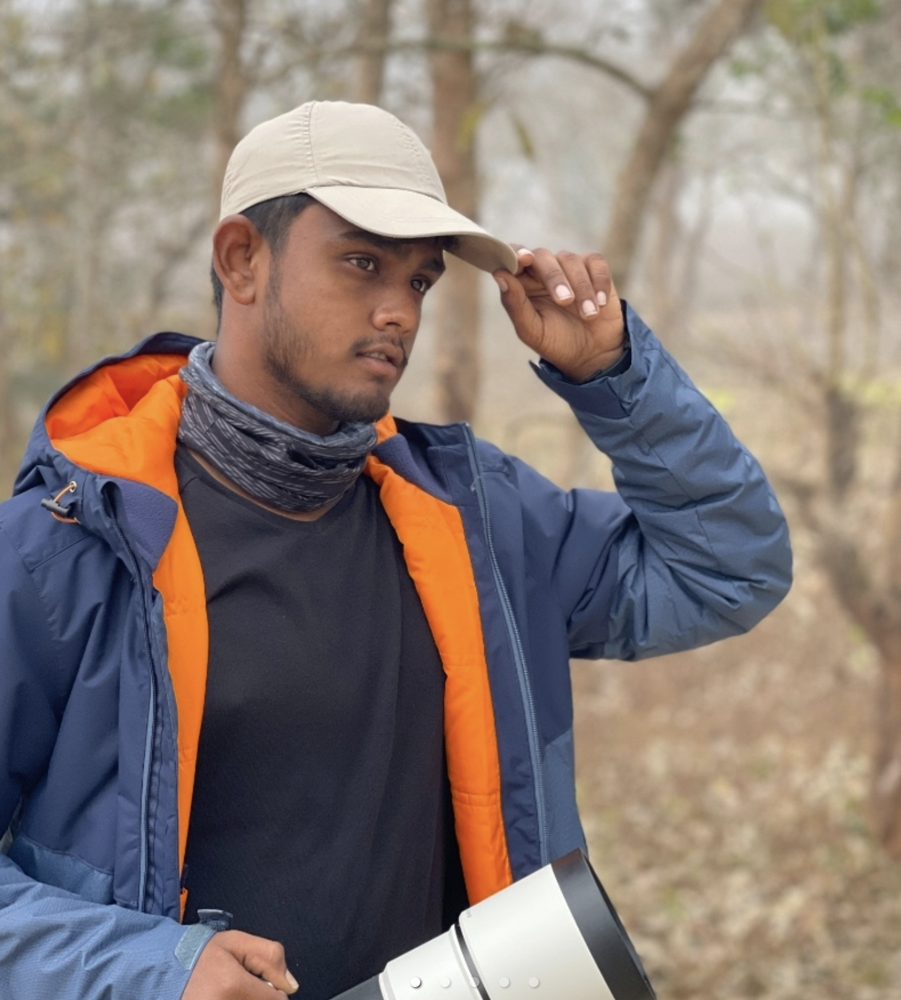
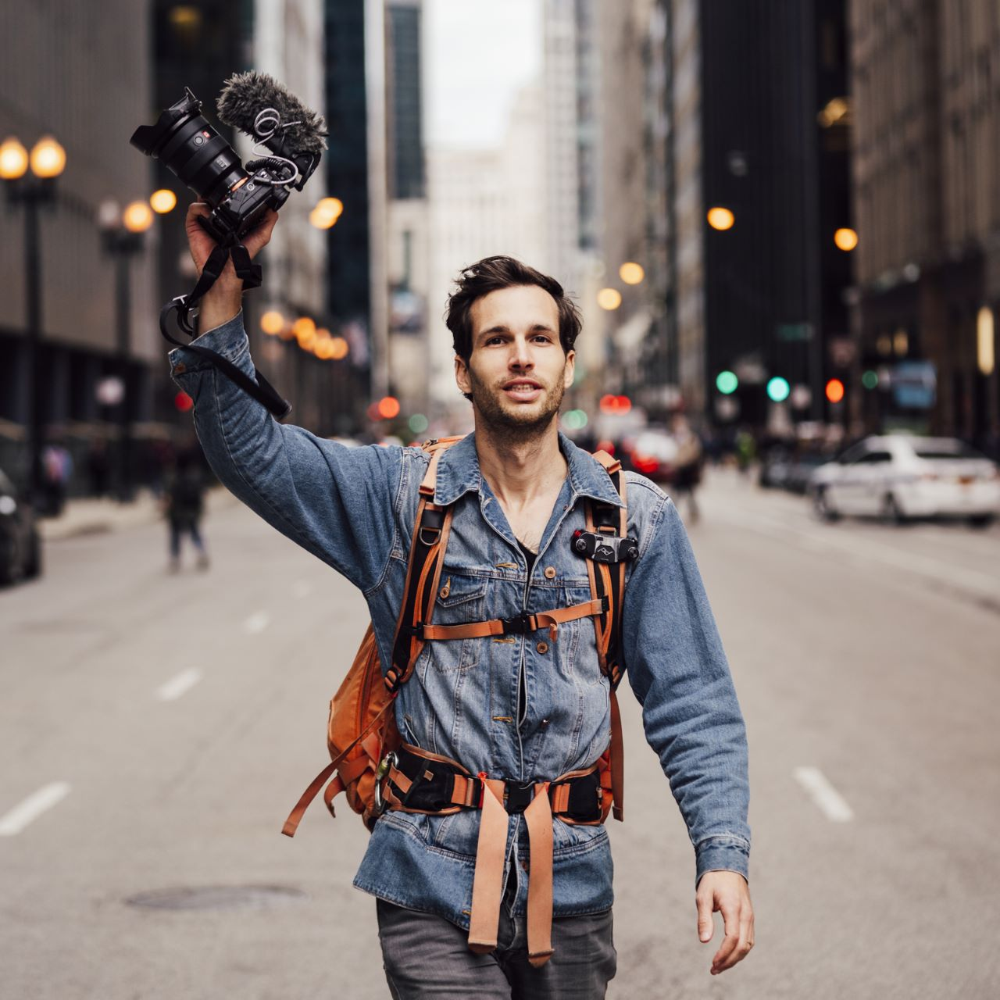
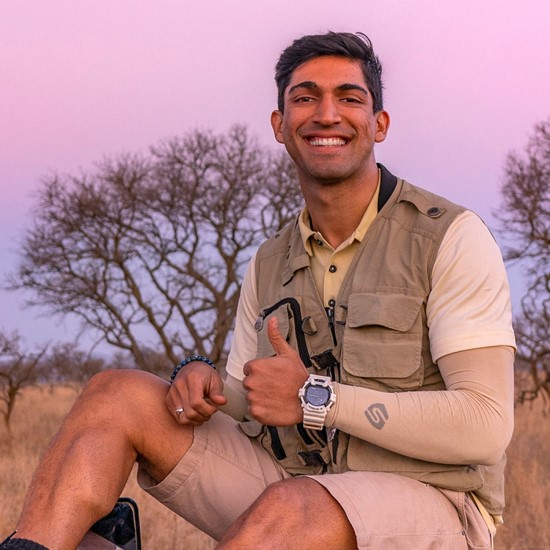

- Arjun Kartha
- Eniyan M.K
- 
- Pierre T. Lambert
- 
- Suyash Keshari
- 
- Varun Adithya

Arjun wields magic with a camera and some. With a background in advertising and computer science, this food photographer realised that he didn't want to sit behind a computer all day. He runs photography studio called Thoda Strong with his wife and partner Praerna Kartha. Arjun creates food imagery that makes one just want to dig in to that food.
Eniyan belongs to Karur, Tamil Nadu. He is a passionate young wildlife photographer and nature enthusiast. He believes “nothing can match the emotions of chasing your passion”. His first trip was to the Western Ghats, and it was the first time when he started his photography journey.
Pierre T. Lambert is a passionate photographer and filmmaker who travels the world, capturing the stories that unfold right in front of his eyes. He inspires others to pursue their own photography and adventure-based dreams through his engaging Instagram and YouTube channels.
Suyash Keshari is a 26 years old wildlife presenter and filmmaker. Wildlife has fascinated his entire life. It began at a very tender age of four, under the influence and tutelage of my late grandfather. What began as a disgust for animals kept in captivity slowly transformed into love and thirst for learning about the last remaining wild places on our planet.
Varun Aditya is an Indian wildlife photographer and an environmentalist. He has also received accolades for his photographs, notably claiming first prize as the National Geographic Nature Photographer of the Year 2016. He has also been doing research about animals and nature by taking photographs of them.